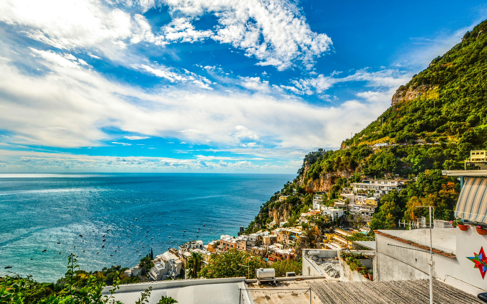

Taken on October 8th 2016 using the NIKON D5200 camera. It's a JPEG image file type, as JPEG is popular for digital photography and online images becuase it's ideal for saving and sharing photographs.
I really like the colors in the image, with a blue sky and ocean on the left and green trees on the right. Seems like a cool vacation spot.